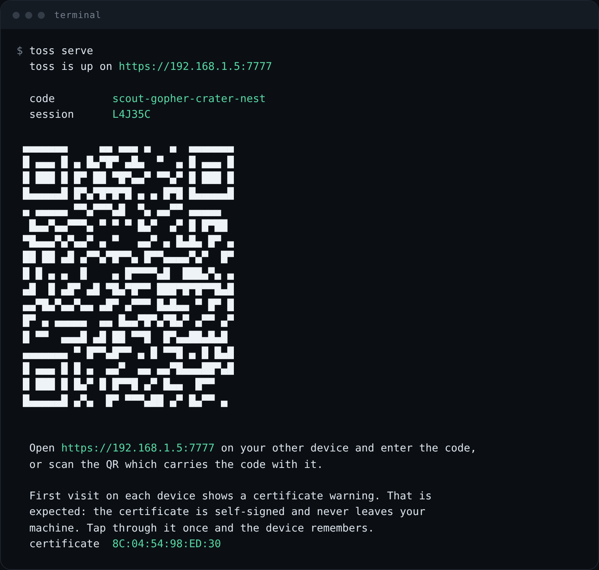

toss.
Highlight something. Hold a key. It is on your phone before you let go.
Your wifi. No account, no upload, nothing in the middle.
hold right ctrl, or press the key
Setup
Three commands. One minute.
-
Install it
pip install "toss[qr] @ git+https://github.com/Swastikkkkk/toss"Python 3.10 or newer. Two dependencies, nothing else.
-
Start it
toss serve
Four words and a QR. That is the whole pairing. -
Scan the QR on your phone
Any browser, nothing to install. The first visit warns you about the certificate, because it is self-signed and never leaves your laptop. Tap through it once. Then add to home screen and it opens like an app.

Your phone, receiving.
That is it.
Highlight anything, hold right‑ctrl. Type on the phone to send back. It remembers the pairing, so you never do this again.
toss install
Optional: starts it on login, no terminal window.
The four words become an AES-256 key. Your laptop relays sealed bytes it cannot read.
Device to device over your own wifi. Nothing is uploaded, nothing is stored.
iPhone, Android, Windows, Mac, Linux. The receiving side is just a browser tab.
Commands
Everything else.
toss send
Send your clipboard without the hotkey
toss send notes.pdf
Send a file by name
toss status
Your code, address and settings
toss serve --new-code
Rotate the code, cut old devices off
toss serve --key capslock
Hold a different key
toss uninstall
Stop starting on login
Before you try it
College wifi will block it
Client isolation stops devices talking directly. Home wifi works. A phone hotspot works.
The hotkey is Windows only
Elsewhere everything works except hold-to-send. Use toss send.
Your laptop is the hub
If it sleeps, the session ends. No server in the middle is the point.